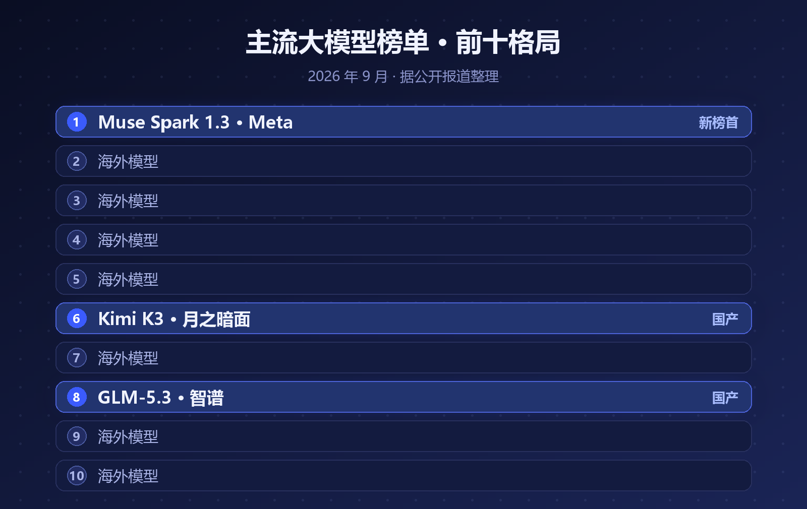
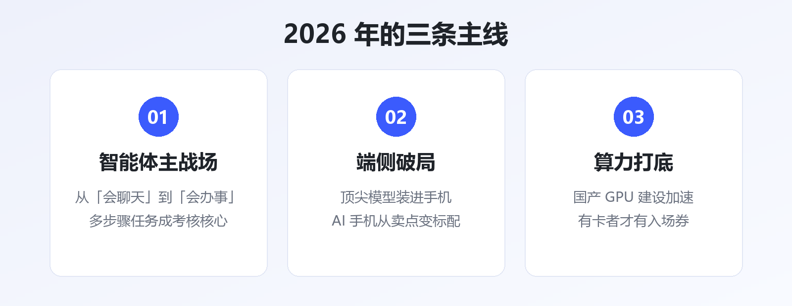

9 月的大模型圈，出了一件不大不小、但很有信号意义的事。
9 月 2 日，Meta 上线了新模型 Muse Spark 1.3。三天后，它登顶了一份涵盖 30 款主流大模型的评测榜单——第一名既不是 OpenAI，也不是 Anthropic，而是 Meta。
更值得注意的一个细节是：榜单前十，国产模型占了两个席位——Kimi K3 排第 6，GLM-5.3 排第 8。

▲ 图1 · 9 月主流大模型榜单前十格局（据公开报道整理）
过去两年，"最强模型"这个词基本被 OpenAI 和 Anthropic 轮流垄断，Meta 的开源策略更多是"量大管饱"，冲刺榜首的次数不多。
这次 Muse Spark 1.3 能三天登顶，靠的主要是两项能力的大幅跃升：
• 编程能力：代码生成与修复的成绩逼近甚至局部反超第一梯队
• 智能体（Agent）能力：多步骤任务规划、工具调用、长程执行的稳定性明显提升
换句话说，2026 年的榜单竞争，重心已经从"聊天谁更聪明"转向了"干活谁更靠谱"。
这和整个行业的主线是一致的：今年真正落地的 AI 应用，几乎全是智能体——自动写代码、自动做调研、自动跑工作流。评测标准自然也跟着变了。
Kimi K3 第 6、GLM-5.3 第 8，前十占两席——这个成绩放在两年前是不敢想的。
但也要冷静看两点：
• 头部差距仍在：前五名依然被美国团队包揽，榜首的编程与 Agent 成绩还有明显身位差
• 榜单不等于商业：排名往上爬是一回事，开发者生态、企业订单、算力成本是另一回事
国产模型的真正机会，可能不在"通用榜一"，而在行业专精——中文场景、本土合规、垂直领域的深度适配，这些是海外模型短期内难以覆盖的。
单看一次排名变化意义有限，但它指向的趋势很清晰：
• 智能体成为主战场：模型竞争的考核项从"会聊天"变成"会办事"
• 端侧破局：顶尖模型开始装进手机，AI 手机从营销词变成真卖点
• 算力打底：国产 GPU 建设加速，谁有卡、谁能用好卡，谁就有下一轮的入场券
有业内判断认为，"预训练 + 微调"的旧范式正在让位于"通用基座 + 行业专精 + 推理时进化"，未来是百亿智能体的时代。

▲ 图2 · 2026 年 AI 行业的三条主线
对普通人来说，这些榜单变化的意义其实很直接：模型越卷，工具越便宜好用。
三年前要付费订阅才能用上的能力，现在开源免费；去年还需要人工盯着的流程，今年智能体自己就能跑完。与其纠结"哪个模型最强"，不如挑一两个真实场景，把 AI 真正用进自己的工作流里。
参考资料
• 知乎专栏《30 款主流 AI 大模型，第一名有点意外》（2026-09-07）
• 钜亨网：Meta Muse Spark 1.3 发布相关报道
• 中国日报：周鸿祎 2026 年 20 个 AI 预言
• 华尔街见闻：2026 年 AI 与技术趋势
本文由 AI 内容流水线生成，人工审核后发布。觉得有用的话，点个「在看」和「关注」，每天一条 AI 圈有价值的动态。